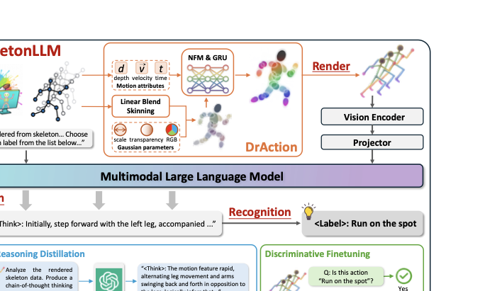
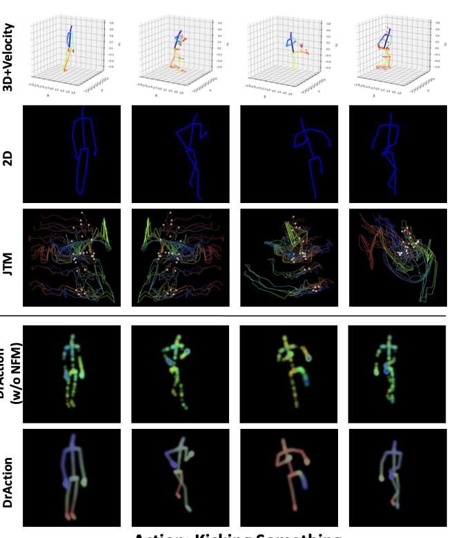

Rendering Overview
DrAction converts skeleton sequences into visual tokens that MLLMs can process directly, while preserving motion cues across different skeleton formats.


Rendered Motion Samples
Each animation shows a rendered skeleton sequence with its submitted ground-truth motion description.